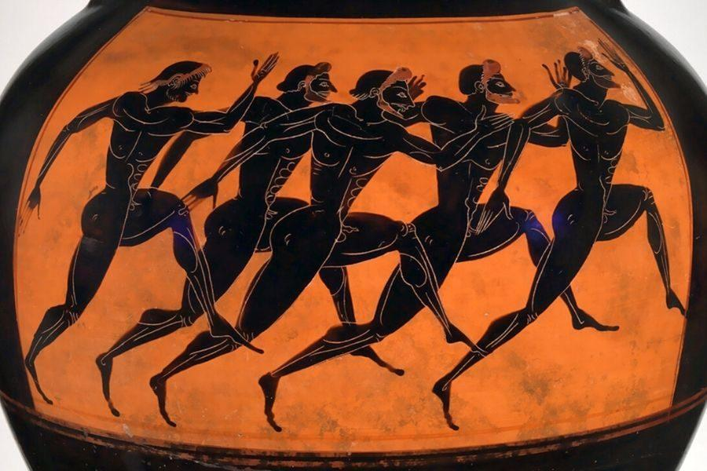
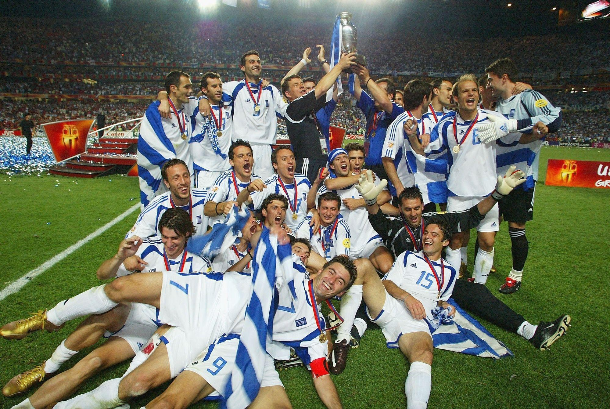
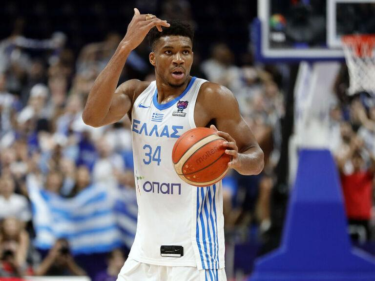

Os primeiros Jogos Olímpicos registrados aconteceram em 776 a.C., na cidade de Olímpia. Em 1896, Atenas recebeu a primeira edição dos Jogos da era moderna.

Em 2004, a seleção grega surpreendeu a Europa ao vencer Portugal por 1 a 0 e conquistar seu primeiro título da Eurocopa.

Nascido em Atenas, Giannis se tornou um dos principais jogadores de basquete da atualidade, representando a Grécia na NBA e em competições internacionais.

VOLTA AO MUNDO